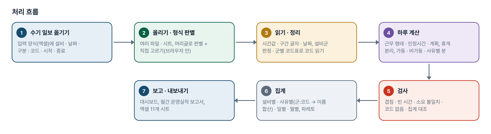
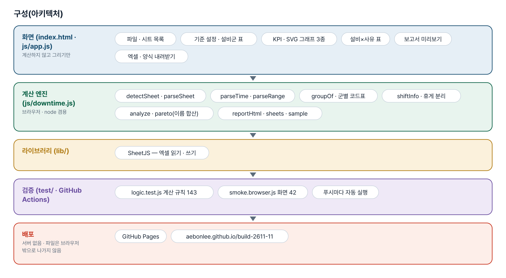
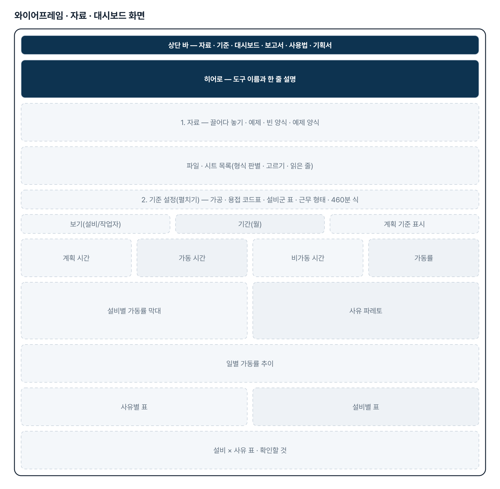
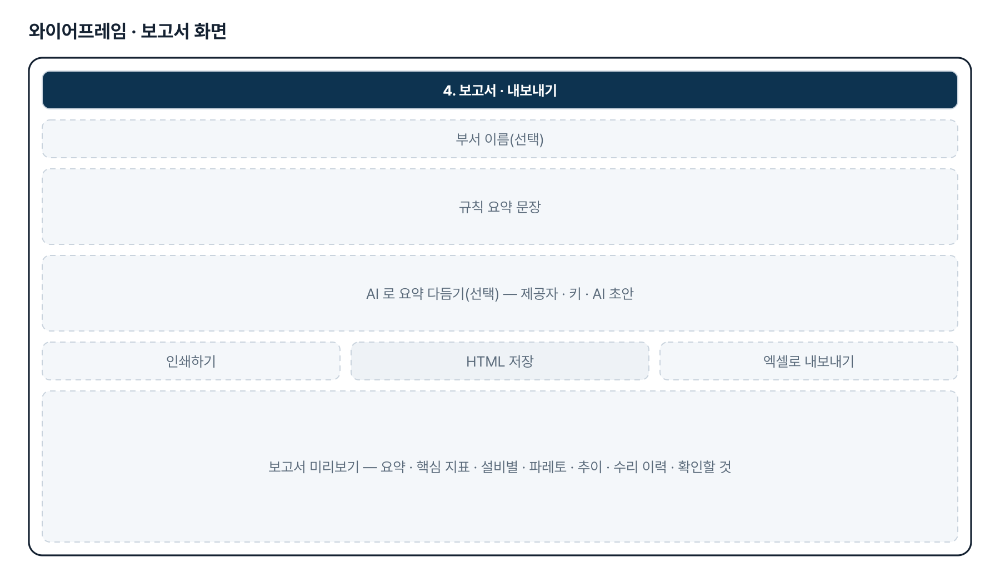
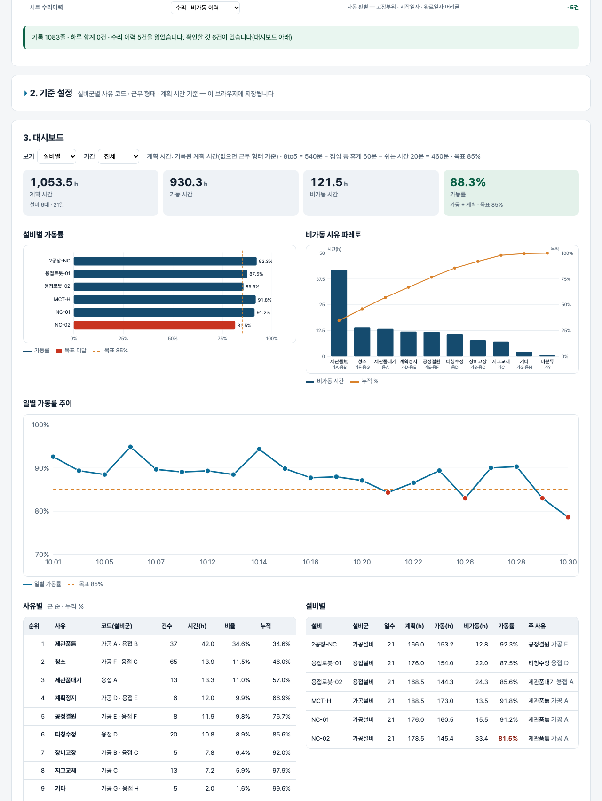

기획서 내려받기
파이프라인 · 아키텍처 · 와이어프레임 · 개발일지가 들어간 워드 문서입니다. 버전마다 따로 남깁니다.
| 버전 | 날짜 | 바뀐 점 | 파일 |
|---|---|---|---|
| v1.3 | 2026-11-04 | 기획자 댓글(2026-11-04 「작성된 작업일보 스캔본을 입력시키면 자동으로 변환해서 집계」, 양식 2종 드라이브 공유) 대응 — 스캔본 읽기 화면(scan.html · js/scanread.js · js/scan.js) / AI 비전(OpenAI gpt-4o-mini 사진 / Anthropic claude-haiku-5-5 사진 · PDF)으로 읽기 → 확인 · 수정 → 입력 양식 변환 → 집계 화면(index.html#scan)에 파일처럼 올리기 · 엑셀 내려받기 · 손으로 입력 / 테스트 판정 163→208 · 화면 66 | 워드 내려받기 |
| v1.2 | 2026-11-03 | 기획자 댓글 2(실제 설비 이름 30대) 반영 — 용접 라인 MAIN · BOOM · TRACK · SUB · CHASSIS · ARM · BUCKET · BLADE(N호기 · 대소문자 · 띄어쓰기 무관)를 용접으로, NC · CNC · MCT · 밀링 · 호리젠탈 · 머시닝 · 선반을 가공으로 명시. 「MAIN 1호기」가 가공으로 잘못 잡히던 것을 고침 / 가공 · 용접 낱말이 둘 다 있는 이름(「NC 용접기」)은 「확인 필요」 — 가공으로 세되 확인할 것과 설비군 표에 표시하고 사용자가 고름 / 기준 설정 설비군 표에 「기획자 설비 목록(2026-11) 불러오기」(30대 한 번에, 이미 있는 이름은 그대로) · 「직접 고른 설비군 모두 지우기」. 입력 양식 범례 시트 아래에 같은 목록 / 예제 설비 이름은 그대로(용접로봇-01/02 여전히 용접). 계산 테스트 163 · 화면 테스트 47 | 워드 내려받기 |
| v1.1 | 2026-11-03 | 기획자 댓글 반영 — 사유 코드를 설비군별로: 가공설비 A~G · 용접설비 A~H(티칭수정 등), 설비군 자동 판정(로봇 · 용접 · ABB · KOBE · 야스카와 …) + 기준 설정에서 설비별 고르기 / 집계 키를 군+코드로 바꾸고, 파레토 · 설비×사유 표는 같은 이름을 합쳐 「가공 B · 용접 C」 처럼 출처 표시. 입력 양식에 설비군 열(선택) / 가동률 기준 식(8to5 = 540 − 점심 60 − 쉬는 시간 20 = 460분)을 기준 설정 · 범례 · 보고서 · 엑셀에 표기 / 예제의 용접로봇이 용접 코드표를 쓰도록 다시 만들고 samples 재생성. 계산 테스트 143 · 화면 테스트 42 | 워드 내려받기 |
| v1.0 | 2026-11-03 | 첫 판 — 입력 양식 · 형식 자동 판별 · 휴게 분리 · 가동률 · 파레토 · 기록 검사 · 대시보드 · 운영실적 보고서 · 엑셀 / 기획서 워드 판·파이프라인·아키텍처·와이어프레임 추가 | 워드 내려받기 |
요구사항과 구현
| 기획서 요구 | 구현 |
|---|---|
| 비가동 이력 집계(수기로 받음) | 입력 양식(설비 · 날짜 · 구분 · 코드 · 시작 · 종료 · 소요 · 내용) + 범례 시트, 다시 올리면 바로 집계 |
| 기존 자료 여러 형식 | 머리글로 형식 자동 판별(입력 양식 · 작업일보 · 일일 집계 · 가동률 시트 · 수리 이력) + 시트마다 직접 고르기 |
| 시간 · 구간 읽기와 휴게 분리 | 엑셀 시간값 · HH:MM · 「10.01 11:00 ~ 11:30」 구간, 휴게 줄 분리 · 휴게와 겹친 분 빼기 |
| 설비군별 사유 코드(기획자 답) | 가공 A~G · 용접 A~H 코드표, 설비군 자동 판정 + 설비별 고르기, 키는 군+코드 · 표시는 이름(같은 이름 합산 · 출처 표시) |
| 실제 설비 이름으로 설비군 판정(기획자 댓글 2 · v1.2) | 용접 라인 MAIN · BOOM · TRACK · SUB · CHASSIS · ARM · BUCKET · BLADE(N호기 · 대소문자 · 띄어쓰기 무관) → 용접, NC · MCT · 밀링 · 호리젠탈 · 머시닝 → 가공, 둘 다면 「확인 필요」. 기획자 설비 목록 30대 한 번에 등록 단추 · 범례 시트 목록 |
| 가동률 분석 | 가동 ÷ 계획(계획 0 이면 빈칸). 8to5 = 540 − 점심 60 − 쉬는 시간 20 = 460분, 계획 기준 고르기 |
| 설비별 · 사유별 · 일별 · 월별 | KPI · 설비별 막대(목표선) · 파레토(누적 %) · 일별 추이 · 설비×사유 표, 설비/작업자 보기 |
| 기록 검사 | 소요 불일치 · 구간 겹침 · 빈 시간 · 코드 없음 · 집계 대조 · 수리 총시간 대조 → 확인할 것 |
| 설비 운영실적 보고 | 인쇄용 HTML(규칙 요약 문장 · 그림 · 표), 선택 AI 다듬기, 엑셀 11개 시트 |
| (v1.3) 작성된 작업일보 스캔본을 입력시키면 자동으로 변환해서 집계(기획자 댓글 2026-11-04, 양식 2종 드라이브 공유) | scan.html — 스캔본(사진 · PDF) 올리기 → AI 비전(OpenAI/Anthropic, 키 + 외부 전송 확인)으로 머리 · 비가동 내역 · 작업/생산 현황을 JSON 으로 읽기 → 원본 옆에서 확인 · 수정(범례 · 시각 · 날짜 · 겹침 검사) → 입력 양식 줄로 바꿔 집계 화면에 파일처럼 올리기. 키 없으면 「손으로 입력」 |
그림으로 보기





개발일지
2026-11-13 · 마무리 — 로그인 · 게시판 · 첫 화면(판 2026-11-13.1)
- 과정 마무리 묶음을 붙임(마산 2차수 과제와 같은 키트) — 로그인 전 첫 화면(사진 3장 · 기능 · 사용 순서 · 기획서), 회원가입 → 사용 신청 → 관리자 승인, 게시판 · 새 글 알림, 내 정보, 관리(구성원 승인 · 첫 화면 모양)
- Supabase 표 · 함수 · 정책은 전부 build261111_ 로 시작(auth.sql · board.sql · site.sql). 과정용 프로젝트에 적용했고, supabase/README.md 순서대로 본인 프로젝트로 옮길 수 있음
- 도구의 계산 · 판정 · 저장 방식은 그대로(업무 자료는 지금처럼 브라우저 안에서만 처리). 기획서 · 사용법 쪽은 로그인 없이 읽음
- 내 PC(파일로 열기 · localhost)에서는 로그인을 건너뜀 — 주소 끝에 ?auth=1 을 붙이면 로그인 화면을 볼 수 있음
2026-11-04 · v1.3 스캔본 읽기
- 요청 원문(패들릿 댓글 994242236, 정한결, 13:54): 「가공설비 작업일보 · 용접설비 작업일보(구글 드라이브 PDF 2건) — 작성된 작업일보 스캔본을 입력시키면 자동으로 변환해서 집계를 할 수 있게 업데이트 요청드립니다」. 두 PDF 는 빈 양식(생산작업일보: 머리 7칸 + 일 작업 내역 9줄 + 비가동 내역 6줄(범례 A~H) + 특이사항 / 자동용접 ROBOT 가동일보(트랙 3): 날짜 · 가동 시작/종료/총 가동시간 + 장비 점검 3항목 + 생산 현황 21줄(Model · Start · Closing · 범례 · Special Note)). 리포에는 양식 구조만 지시문으로 옮겼다.
- 엔진 scanread.js — 양식 2종 정의 · 지시문 · 요청 모양(사진 · PDF) · 답 읽기(normalizePage) · 검사(validate) · 입력 양식 변환(toFormRows, 범례 이름 → 집계 코드) · 예제 답(가짜 2장)
- 화면 scan.html · scan.js — 올리기 · AI · 확인/수정 · 보내기. app.js 가 #scan 으로 오면 localStorage 의 줄을 파일처럼 올린다
- 판정 테스트 208 · 화면 테스트 66 통과
2026-11-03 · 첫 판
- 패들릿 정한결 기획(건설기계 제관 생산기술지원) 중 설비 가동관리를 작업 지시서(CLAUDE.md)로 옮기고 구현
- 수강생 자료에서는 구조만 가져오고 예제는 전부 가짜 값(설비 6대 · 작업자 6명 · 수리 5건)
- 계산 엔진 downtime.js — 형식 판별 · 시간 · 구간 읽기 · 휴게 분리 · 검사 · 집계 · 파레토 · 보고서 · 엑셀
- 화면 — 파일 · 시트 목록 · 기준 설정 · KPI · SVG 그래프 3종 · 표 · 확인할 것 · 보고서 미리보기
- 계산 테스트 120 · 화면 테스트 33 통과
2026-11-03 · v1.1 — 기획자 답 반영
- 패들릿 댓글(설비군별 사유 코드 · 460분 기준)을 CLAUDE.md 부록 B 에 옮기고 반영
- 엔진 — 설비군 판정, 군별 코드표로 읽기, 군:코드 키, 이름 합산 파레토 · 표, 460분 식
- 화면 — 가공 · 용접 코드표, 설비군 표, 파레토 출처 표시, 설비별 표 설비군 열
- 계산 테스트 120 → 143 · 화면 테스트 33 → 42 통과
2026-11-03 · v1.2 — 실제 설비 이름으로 설비군 판정
- 패들릿 댓글 2(가공 10대 · 용접 20대 이름)를 CLAUDE.md 부록 C 에 옮기고 반영 — 용접 라인 8개 · 가공 낱말을 판정 규칙에 명시, 혼합 이름은 확인 필요
- 화면 — 설비군 표에 확인 필요 표시 · 기획자 설비 목록 불러오기 · 직접 고른 설비군 지우기, 범례 시트에 목록
- 계산 테스트 143 → 163 · 화면 테스트 42 → 47 통과, 일부러 깨뜨려 7종 모두 잡힘